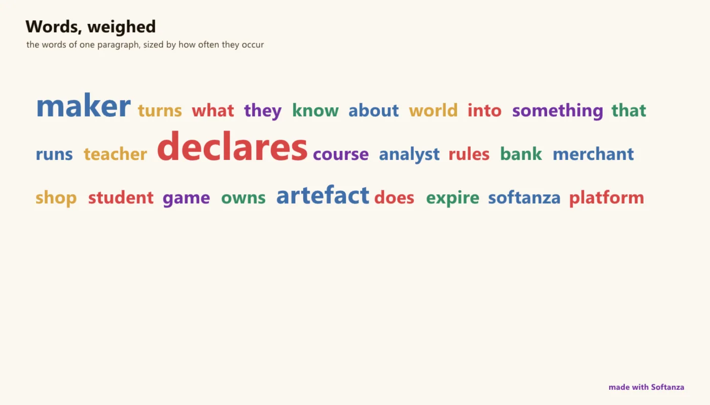

Le traitement du langage naturel dans Softanza est l'analyse de textes écrits dans les langues humaines. Tout tourne en local, sans rien installer ni télécharger. À partir d'une ligne de code, une phrase peut être découpée en mots (segmentée), étiquetée par catégories grammaticales, réduite à des radicaux, notée pour son sentiment, ou résumée. Un radical est la racine d'un mot, comme « chant » pour « chantons ». Le sentiment est le ton positif ou négatif d'un texte.
La chaîne de traitement est classique et déterministe, c'est-à-dire que la même entrée donne toujours la même sortie. Elle utilise des algorithmes de référence publiés et non des recettes maison. Ce sont les règles Unicode pour les frontières de mots et de phrases ; la racinisation Snowball en 25 langues ; l'étiqueteur à perceptron moyenné de NLTK, réécrit en Zig avec ses poids embarqués ; le sentiment VADER, avec un décompte qui explique la note ; RAKE, TextRank et TF-IDF pour les mots-clés et les résumés par extraction (des résumés faits de phrases prises dans le texte) ; WordNet pour les synonymes ; et Soundex et Metaphone pour les mots qui se prononcent de façon proche. Interrogée sur ses groupes nominaux (groupes de mots construits autour d'un nom), la phrase anglaise « The quick brown fox jumps over the lazy dog » en donne deux, « The quick brown fox » et « the lazy dog », et rien n'a été téléchargé pour cela.
Deux idées sont propres à Softanza. La première est qu'un verdict porte un niveau de confiance, certainement, probablement ou apparemment, suivi d'une explication, parce que le langage dit avec quelle sûreté une chose est sue, et pas seulement quoi. L'exemple ci-dessous juge deux phrases. La phrase enthousiaste reçoit la réponse vrai, avec l'explication « certainly yes: positive in tone ». La phrase « The sky is blue. » reçoit la réponse faux, avec « apparently not: positive in tone ».
o1 = Q("I absolutely love this wonderful amazing library!").TextQ()
# a verdict, and how surely it is known
? o1.IsPositive()
#--> TRUE
? Why()
#--> certainly yes: positive in tone
o2 = Q("The sky is blue.").TextQ()
? o2.IsPositive()
#--> FALSE
? Why()
#--> apparently not: positive in tone
exécuté dans la bibliothèque le 2026-10-20
La seconde idée concerne le code quasi naturel, c'est-à-dire du code écrit pour se lire comme une phrase anglaise. Le programmeur écrit explicitement la structure de la phrase, si bien que la machine n'a jamais à la deviner. Une chaîne d'appels qui demande au plus deux voyelles refuse un nom qui en a trois, et le dit dans une phrase. L'exemple ci-dessous l'applique à « AnnIE », qui a trois voyelles et donne faux avec la raison « no: expected atmost 2, found 3 », et à « Anne », qui donne vrai avec « yes: expected atmost 2, found 2 ».
# near-natural code: the chain is the sentence, and the refusal is too
? Q("AnnIE").AtMost(2).VowelNB()
#--> FALSE
? Why()
#--> no: expected atmost 2, found 3
? Q("Anne").AtMost(2).VowelNB()
#--> TRUE
? Why()
#--> yes: expected atmost 2, found 2
exécuté dans la bibliothèque le 2026-10-20
Le Compas est le document qui note chaque domaine face au meilleur outil de sa catégorie. Il rapporte que c'est la meilleure chaîne classique embarquée et sans installation de ses pairs, compétitive avec NLTK et plus simple à atteindre. Elle est un étage sous spaCy et Stanza sur exactement les tâches qui exigent un modèle entraîné : la reconnaissance neuronale d'entités (trouver les noms de personnes et de lieux), l'analyse en dépendances (trouver quel mot dépend de quel autre) et les plongements appris (des nombres qui représentent le sens des mots). Ces appels existent sur stzText et s'affinent quand un modèle local est présent. La fonderie qui fournirait un tel modèle est le travail qui reste dû. Pour ces tâches, utilisez aujourd'hui spaCy ou Stanza.

les mots d'un paragraphe, à la taille de leur fréquence. dessiné le 2026-10-01 par le script du site tools/areas-figurative.ring, exécuté dans la bibliothèque au commit 0e72e2e2c · la source(s'ouvre dans un nouvel onglet)
Où il en est
La lecture du Compas Softanza : chaque couloir du domaine noté face au meilleur de sa catégorie, d'après ce que les gardes prouvent (Read from the source on 2026-09-16). Les phrases du Compas sont en anglais, telles qu'il les a écrites.
A deterministic, fully-embedded classic NLP pipeline — UAX#29 tokenization, 25-language Snowball stemming, an averaged-perceptron POS tagger (NLTK's own model, reimplemented in Zig), VADER sentiment, RAKE + TextRank + TF-IDF keywords, WordNet, phonetics — with zero downloads and a one-line first contact. Its own stated target is to beat NLTK on simplicity, and against NLTK it largely does. But it sits a full tier below spaCy and Stanza: NER is gazetteer-rule not neural, there is no dependency parsing, and the neural upgrades (transformer NER, embeddings, abstractive summary) are wired but no-op without a local model — gated on the still-unstarted ggml/GGUF foundry.
The honesty line on the ratings. The guards are behavioral, not benchmarked — no POS accuracy, NER F1 or VADER-parity number exists anywhere. What they prove is values and invariants: the lemmatizer's ambiguity tie-break is pinned so a data edit fails loudly, sentiment sign/ordering holds against a build-time tally over 1,000 reviews, POS/word/sentence counts agree, and multilingual input survives byte-for-byte through the English models (robustness, not linguistic correctness on non-English). So the lanes are rated on faithful-reimplementation-of-a-known-method, not on a measured score.
The one-sentence position. Softanza's NLP is the best embedded, zero-setup, deterministic classic pipeline of its peers — genuinely competitive with NLTK and simpler to reach — and a full tier below spaCy/Stanza on exactly the things that need a model: neural NER, dependency parsing and learned embeddings, all deferred to a local-model upgrade that hasn't been built yet.
Ce qu'un artisan en fait, et ce qui se distingue
Zero downloads: every model and lexicon is @embedFile'd, one-line first contact
RAKE, TextRank and TF-IDF plus extractive summary in one engine
NLTK's own averaged-perceptron POS model reimplemented in Zig with no ML runtime
25-language Snowball stemming at reference parity
Ce qui est dû
The ggml bridge + GGUF foundry that turns every neural delegator real
Statistical or neural NER above the gazetteer floor
Restore the full WordNet graph (hyponyms, meronyms, antonyms, glosses)
Dependency parsing, entirely absent
Repensé depuis les premiers principes
Ce que Softanza a gardé de ce qui marche, et ce qu'elle a repensé, tel que la bibliothèque l'a écrit dans ses documents de conception et ses narrations.
La manière SoftanzaUne chaîne est faite de caractères ; un texte est une chaîne élevée au sens, et toute capacité linguistique doit fonctionner en local, sans rien installer ni télécharger.
Gardé des meilleures pratiques
Des algorithmes de référence publiés, pas des recettes maison : racinisation Snowball en 25 langues, sentiment VADER, étiquetage grammatical par perceptron moyenné et résumés TextRank. source(s'ouvre dans un nouvel onglet)
Mots et phrases sont découpés selon les règles de segmentation Unicode (UAX #29), avec quelques écarts documentés, choisis pour obtenir de bons jetons linguistiques. source(s'ouvre dans un nouvel onglet)
L'apprentissage automatique classique et explicable — plus proches voisins, Bayes naïf, arbres de décision, règles d'association — sert de socle, en local, et justifie ses réponses. source(s'ouvre dans un nouvel onglet)
Repensé
Tout est embarqué : une ligne suffit, sans installation, sans téléchargement ni internet, au lieu de récupérer des paquets de données fonctionnalité par fonctionnalité. source(s'ouvre dans un nouvel onglet)
Les verdicts portent leur degré de certitude — certainement, probablement, apparemment — et Why() les explique, car la langue dit aussi avec quelle assurance on sait. source(s'ouvre dans un nouvel onglet)
Le même appel s'affine quand un modèle local est présent — les entités par règles deviennent des entités par transformeur — sans jamais exiger de service payant ou distant. source(s'ouvre dans un nouvel onglet)
Dans le code quasi naturel, c'est le programmeur qui analyse : les chaînes de méthodes suivent la grammaire anglaise (articles, accord, « which »), et la machine n'a jamais à deviner. source(s'ouvre dans un nouvel onglet)
La manière Softanza, exécutée
Ce que Softanza fait autrement dans ce domaine, montré par du code tiré de ses narrations et de ses gardes, et exécuté pour cette page.
Sans rien télécharger, une phrase est étiquetée et ses groupes nominaux sont trouvés par un motif sur les classes de mots.
Softanza
o1 = new stzText("The quick brown fox jumps over the lazy dog")
aNP = o1.NounPhrases()
? " NounPhrases: " + @@(aNP)
chk("the classic NP grammar finds both phrases",
len(aNP) = 2 and aNP[1] = "The quick brown fox" and aNP[2] = "the lazy dog")
chk("any tag grammar works (VBZ IN)", o1.Chunks("VBZ IN")[1] = "jumps over")
Sortie
NounPhrases: [ "The quick brown fox", "the lazy dog" ]
[OK] the classic NP grammar finds both phrases
[OK] any tag grammar works (VBZ IN)
12 couloirs, chacun face au meilleur de sa catégorie
Pour chaque couloir : ce qui tourne dans le moteur aujourd'hui, les outils contre lesquels il est juste de le mesurer, et ce qui reste dû.
01Tokenization & sentence segmentationStrong
In the engine
word_break.zig implements the full UAX#29 word-boundary state machine — WordIter / SentenceIter are the shared seam every lane routes through. Sentence splitting handles terminator runs, ellipses, abbreviations (Dr.) and in-token dots (example.com).
Measured against
spaCy tokenizerNLTKICU BreakIterator
To complete
CJK and Thai break per-codepoint pending true dictionary segmentation (libthai/ICU is the named future step) — the one deviation from full correctness.
02StemmingStrong
In the engine
Vendored Snowball (stem.zig) across 25 languages — english, arabic, french, german, russian, hindi, tamil, turkish and more — the reference algorithm, engine-backed, with per-language and auto-detect entry points.
Measured against
NLTK Snowball / PorterspaCy (no stemmer)
To complete
At reference parity — it is Snowball. spaCy doesn't stem at all; this is a lane where the classic approach is simply the right one.
03Keyword & keyphrase extractionStrong
In the engine
All three classic methods, engine-backed: RAKE (textutil.zig), TextRank keywords + extractive summary (textrank.zig, PageRank over a co-occurrence graph), and TF-IDF keywords (textstats.zig, with corpus-level IDF via stzCorpus).
Measured against
gensim (TextRank)NLTKRAKE-nltk / yake
To complete
Having RAKE, TextRank and TF-IDF plus extractive summarization in one engine is broader than most single libraries offer. A genuinely strong lane.
04POS taggingSolid
In the engine
pos.zig — an averaged perceptron, a faithful reimplementation of NLTK's averaged_perceptron_tagger (Penn Treebank), with the trained weights (~75k features) @embedFile'd and deterministic argmax. No ML runtime.
Measured against
NLTK (same model)spaCy (neural)Stanza (neural)
To complete
English only, and a trained linear model sits below spaCy/Stanza's neural taggers on accuracy. At NLTK parity because it is NLTK's model.
05Sentiment (VADER)Solid
In the engine
sentiment.zig — a faithful VADER (Hutto & Gilbert): a 7,500-term lexicon plus the five rule heuristics (caps emphasis, degree boosters with distance damping, negation, contrastive "but", punctuation), with an explainable breakdown.
Measured against
NLTK (ships VADER)transformer sentimentTextBlob
To complete
English only and rule-based — below a fine-tuned transformer on nuanced text. Faithful to VADER, which is the point; the neural upgrade is deferred.
06LemmatizationSolid
In the engine
lemma.zig — dictionary form→lemma lookup for en / fr / ar (the fr table is 4.5 MB), plus an English regular-suffix rule fallback validated against the lemma set. Irregulars (mice→mouse) covered by the tables.
Measured against
spaCy lemmatizerNLTK WordNetLemmatizerStanza
To complete
POS-blind and three languages. Ambiguous forms resolve by an alphabetical tie-break (better→well) — pinned by a test as an artifact, not a policy. POS-aware lemmatization is the accuracy step.
07Statistical text (collocations · readability · lang-detect)Solid
In the engine
A broad statistical toolkit in textstats.zig / textutil.zig: PMI collocations, word/char n-grams + frequency, cosine similarity, Flesch reading-ease and grade, stopword removal, lexical diversity, and language detection.
Measured against
NLTKtextstatlangdetect
To complete
At NLTK parity for the statistical layer; mostly English-tuned (stopwords, readability). A solid, broad utility belt.
08PhoneticsSolid
In the engine
phonetics.zig — Soundex (4-char) and Metaphone (6-char), English-oriented, pure algorithm with no data file — an extra that NLTK and spaCy don't ship.
Measured against
jellyfish / fuzzyApache Commons Codec
To complete
Two algorithms — no Double Metaphone, NYSIIS or Caverphone. A nice bonus over the NLP peers, short of a dedicated phonetics library.
09Named-entity recognitionPartial
In the engine
ner.zig — deterministic, gazetteer + POS-chunk + rules (no model): chunk NNP runs, classify via firstname / place / org gazetteers and title/context rules into PERSON / ORGANIZATION / LOCATION / ENTITY.
Measured against
spaCy (neural, 18 types)StanzaNLTK
To complete
Well below neural NER: four types, English gazetteers, no learned disambiguation. The file itself names CRF/transformer NER as "the modern-tier upgrade." The weakest classic lane against the peers.
10WordNetPartial
In the engine
wordnet.zig over a compacted Princeton WordNet 3.1 (8.6 MB, ~140k words): synonyms and hypernyms, the two most-used relations, engine-backed.
Measured against
NLTK WordNet (full)spaCy (via extensions)
To complete
The compaction dropped hyponyms, meronyms, antonyms and glosses — a substantial subset of what NLTK's WordNet exposes. Synonymy and hypernymy work; the rest of the graph does not.
11Parsing (chunk & constituency)Partial
In the engine
Haro-side chunking (Chunks("DT? JJ* NN+"), NounPhrases) and a cascaded constituency parse tree (stzParseTree, Penn bracket notation, S→VP→PP→NP) — analogous to NLTK's RegexpParser.
No dependency parsing — spaCy and Stanza's core capability is entirely absent, and the doc explicitly keeps it deferred. Constituency-via-cascade is the ceiling.
12Neural NLP & embeddingsEmerging
In the engine
stzText exposes the neural surface — Embedding(), SemanticSimilarityWith(), Classify(labels), SummarizedAbstractively() — all gated on HasSemanticModel().
They no-op without a loaded GGUF model, no static word2vec/GloVe ships, and the ggml bridge + GGUF foundry that would power them is the one unstarted rung (see the Neural tier page).
Ce qui est dû, dans l'ordre du rendement
Les manques, classés par ce qu'ils rapportent et non par leur taille ; la valeur est l'effet sur la portée de la bibliothèque, l'effort une lecture d'ingénieur.
Tier A — foundational
The ggml bridge + GGUF foundry
The one unstarted rung (R4 step 8) that turns every neural delegator real — transformer NER, embeddings, abstractive summary, zero-shot classify. It rides the Neural tier page, and it is what would move this group from "beats NLTK" to "reaches spaCy."
Valeur · élevéeEffort · élevé
Statistical / neural NER
A CRF or perceptron-sequence NER above the gazetteer floor — the weakest classic lane. Lifts recognition beyond four types and English name lists toward usable accuracy, without waiting on the full neural tier.
Valeur · élevéeEffort · moyen
Tier B — cheap data & coverage
Restore the full WordNet graph
Bring back hyponyms, meronyms, antonyms and glosses that the compaction dropped — a larger data file or an on-demand loader. Closes most of the gap to NLTK's WordNet with no new algorithm.
Valeur · moyenneEffort · faible
Ship a static embedding floor
A small GloVe/word2vec embedding embedded like the other data, so SemanticSimilarity works without a GGUF model — the lexical-tier floor the architecture's own LAW 2 calls for.
Valeur · moyenneEffort · moyen
Publish accuracy benchmarks
No POS accuracy, NER F1 or VADER-parity numbers exist — guards prove behavior, not scores. A small eval harness against standard corpora would let these ratings rest on metrics, and prove the NLTK-parity claim.
Valeur · moyenneEffort · faible
Tier C — deep parsing & reach
Dependency parsing
The spaCy/Stanza core, entirely absent. A transition-based parser (classic MALT-style, or on the neural tier) would add the syntactic layer that constituency-cascade only approximates.
Valeur · moyenneEffort · élevé
POS-aware & multilingual lemmatization
Use POS to disambiguate lemmas, and extend beyond en/fr/ar toward the stemmer's 25-language reach — turning the dictionary lane from lookup into linguistically-correct reduction.
Valeur · moyenneEffort · moyen
CJK / Thai dictionary segmentation
The tokenizer's own named future step — vendor libthai/ICU so CJK and Thai break on words, not codepoints, extending the strong tokenization lane to the scripts it currently approximates.
Valeur · moyenneEffort · moyen
La conception, telle que la bibliothèque l'a écrite (2)
Les documents de conception de ce domaine, lus dans le dépôt au commit 4a184e6f0 : ce que chacun est, son plan, et le lien vers le texte entier.
The Softanza Natural Programming Vision
328 lignes · 8 sections · écrit le 2026-07-10, revu le 2026-07-13
Une synthèse du dossier de programmation naturelle, écrite le 2026-07-10, lisant cinq ans de couches comme trois attaques d'un même écart entre intention humaine et exécution, et proposant une architecture à quatre étages sur un seul atome, l'identifiant sémantique ; ses cinq étapes sont réalisées.
Le plan
One Gap, Three Attacks -- and the Common Architecture That Unifies Them
1. The Single Problem
2. The Target Architecture
3. Verdicts, File by File
4. The Articles -- What Each Contributes to the Vision
NNL Reviewed: Near-Natural Language as Softanza's First Paradigm
494 lignes · 12 sections · écrit le 2026-07-11, revu le 2026-07-13
Une revue corrigeant la vision naturelle sur le langage quasi naturel : c'est le premier paradigme de Softanza, où l'humain est l'analyseur et le code suit la dynamique de la langue sans TAL ; elle catalogue les dispositifs grammaticaux, consigne la rénovation et redéfinit les phases restantes.
Le plan
The thesis, the devices, the decay, and the rebuild plan
1. The Thesis, Stated Properly
2. The Device Catalog -- Grammar as API
3. Empirical State (run 2026-07-10, ring127)
4. Design Assessment
4b. The Grammaticality Doctrine (author's correction, 2026-07-10)
4c. The M Ruling (author, 2026-07-10): MARKERLESS -- the M zoo is REMOVED
5. Generalization: Derive the Surface from the Substrate
Les narrations que la bibliothèque a écrites sur ce domaine, chacune exécutée bloc par bloc avant d'être publiée ici.
Softanza: Bridging Minds and Code - A Humanistic Approach to Programming2024 · paradigm essaySoftanza is an innovative approach to programming that dissolves the complexity of code, offering an inclusive pathway for individuals—regardless of their technical background—to transform their ideas into working software.
Softanza Knowledge Porgramming: Crafting the Semantics of Thought2024 · paradigm essayImagine a world where information isn't just stored, but intelligently connected. Where concepts aren't static labels, but dynamic, interrelated entities that can be queried, expanded, and understood in context.
Natural Folder Navigation in Softanza2025 · feature essayIn Softanza, your mental location follows your actions. When you perform an operation in a folder, the system naturally updates your current position to reflect where you just worked. This eliminates the cognitive overhead of manually tracking your location.
**Natural Language Programming, Reimagined: The stzNatural Class in Softanza**2025 · feature essayIn a world increasingly seduced by large language models and AI-generated code, stzNatural class—part of the Softanza library for the Haro programming language—offers a radical yet refreshingly pragmatic alternative: natural language programming that actual...